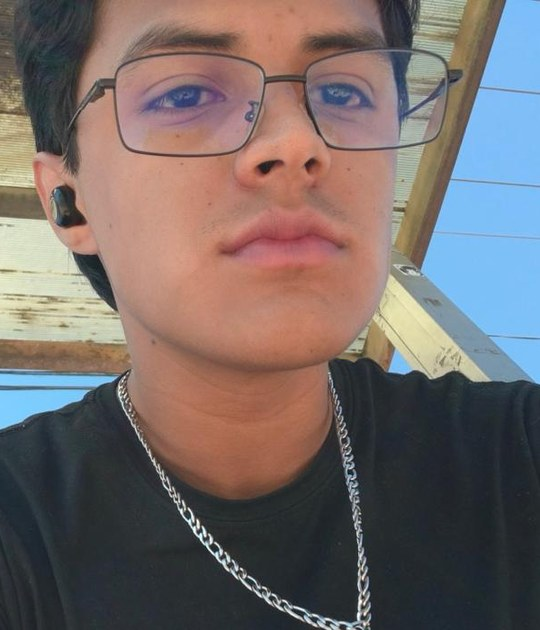

Técnico en Construcción
ago 2022 — jul 2025CECyTEN, plantel Jazmines · Tepic, Nayarit
- Bachillerato técnico con certificación profesional técnica, concluido.

Técnico en Construcción
Técnico en Construcción egresado del CECyTEN plantel Jazmines. Vengo del servicio en piso, donde aprendí a atender clientes, manejar caja y sostener el ritmo en las horas de mayor carga sin perder el orden del área de trabajo. Busco integrarme al sector de la construcción para aplicar mi formación técnica en obra, con disponibilidad para turnos fijos y disposición para viajar.
CECyTEN, plantel Jazmines · Tepic, Nayarit
Botanero Mi Lindo Samao · Tepic, Nayarit